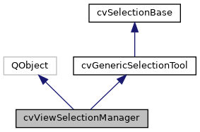
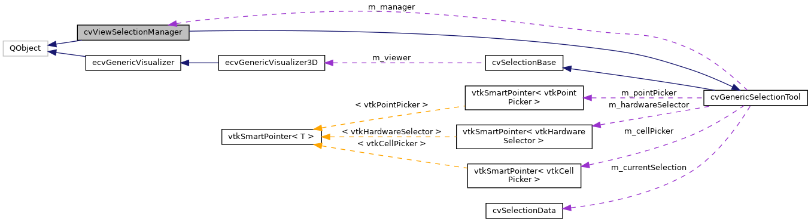

|
ACloudViewer
3.9.4
A Modern Library for 3D Data Processing
|
|
ACloudViewer
3.9.4
A Modern Library for 3D Data Processing
|
Central manager for all selection operations in the view. More...
#include <cvViewSelectionManager.h>


Public Types | |
| using | SelectionMode = ::SelectionMode |
| using | SelectionModifier = ::SelectionModifier |
 Public Types inherited from cvGenericSelectionTool Public Types inherited from cvGenericSelectionTool | |
| using | SelectionMode = ::SelectionMode |
| Selection mode Now using global SelectionMode enum from cvSelectionTypes.h. More... | |
| using | SelectionModifier = ::SelectionModifier |
| Selection modifier (for multi-selection) Now using global SelectionModifier enum from cvSelectionTypes.h. More... | |
Signals | |
| void | selectionCompleted () |
| Emitted when a selection operation is completed. More... | |
| void | selectionChanged (const cvSelectionData &selectionData) |
| Emitted when the selection has changed (VTK-independent) More... | |
| void | selectionChanged () |
| Emitted when the selection has changed (legacy - for backward compatibility) More... | |
| void | modeChanged (SelectionMode mode) |
| Emitted when the selection mode changes. More... | |
| void | modifierChanged (SelectionModifier modifier) |
| Emitted when selection modifier changes. More... | |
| void | customBoxSelected (int region[4]) |
| Emitted for custom box selection. More... | |
| void | customBoxSelected (int xmin, int ymin, int xmax, int ymax) |
| void | customPolygonSelected (vtkIntArray *polygon) |
| Emitted for custom polygon selection. More... | |
| void | zoomToBoxRequested (int region[4]) |
| Emitted for zoom to box. More... | |
| void | zoomToBoxRequested (int xmin, int ymin, int xmax, int ymax) |
Public Member Functions | |
| void | setVisualizer (ecvGenericVisualizer3D *viewer) override |
| Set the visualizer for all selection operations. More... | |
| void | enableSelection (SelectionMode mode) |
| Enable a selection mode (legacy - state tracking only) More... | |
| void | disableSelection () |
| Disable the current selection mode (legacy - state tracking only) More... | |
| bool | isSelectionActive () const |
| Check if any selection mode is currently active. More... | |
| SelectionMode | getCurrentMode () const |
| Get the current active selection mode. More... | |
| void | setSelectionModifier (SelectionModifier modifier) |
| Set the selection modifier. More... | |
| SelectionModifier | getCurrentModifier () const |
| Get the current selection modifier. More... | |
| void | clearSelection () |
| Clear all selections. More... | |
| void | clearCurrentSelection () |
| Clear the current selection data (prevents crashes from stale references) More... | |
| void | growSelection () |
| Grow the current selection by one layer. More... | |
| void | shrinkSelection () |
| Shrink the current selection by one layer. More... | |
| bool | isCompatible (SelectionMode mode1, SelectionMode mode2) const |
| Check if a selection mode is compatible with the current mode. More... | |
| const cvSelectionData & | currentSelection () const |
| Get the current selection data (VTK-independent) More... | |
| void | setCurrentSelection (const cvSelectionData &selectionData, bool resetLayers=true) |
| Set the current selection data. More... | |
| void | setCurrentSelection (const vtkSmartPointer< vtkIdTypeArray > &selection, int fieldAssociation, bool resetLayers=true) |
| Set the current selection data (from VTK array - internal use) More... | |
| bool | hasSelection () const |
| Check if there is a current selection. More... | |
| cvSelectionAlgebra * | getAlgebra () |
| Get the selection algebra utility. More... | |
| cvSelectionPipeline * | getPipeline () |
| Get the selection pipeline. More... | |
| cvSelectionFilter * | getFilter () |
| Get the selection filter. More... | |
| cvSelectionAnnotationManager * | getAnnotations () |
| Get the annotation manager. More... | |
| cvSelectionHighlighter * | getHighlighter () |
| Get the shared highlighter. More... | |
| cvSelectionData | performAlgebraOperation (int op, const cvSelectionData &selectionA, const cvSelectionData &selectionB=cvSelectionData()) |
| Perform algebra operation on selections. More... | |
| vtkPolyData * | getPolyData () const |
| Get the underlying polyData for selection operations. More... | |
| void | setSourceObject (ccHObject *obj) |
| Set the source object for selection operations. More... | |
| ccHObject * | getSourceObject () const |
| Get the source object for the current selection. More... | |
| ccPointCloud * | getSourcePointCloud () const |
| Get the source object as ccPointCloud. More... | |
| ccMesh * | getSourceMesh () const |
| Get the source object as ccMesh. More... | |
| bool | isSourceObjectValid () const |
| Check if the source object is still valid. More... | |
| void | notifyDataUpdated () |
| Notify that scene data has been updated. More... | |
| void | setPointPickingRadius (unsigned int radius) |
| Set the point picking radius for single-point selection. More... | |
| unsigned int | getPointPickingRadius () const |
| Get the current point picking radius. More... | |
| void | setGrowSelectionRemoveSeed (bool remove) |
| Grow/Shrink Selection Settings (ParaView-aligned) More... | |
| bool | getGrowSelectionRemoveSeed () const |
| void | setGrowSelectionRemoveIntermediateLayers (bool remove) |
| Set whether to remove intermediate layers when growing selection. More... | |
| bool | getGrowSelectionRemoveIntermediateLayers () const |
| void | expandSelection (int layers, bool removeSeed=false, bool removeIntermediateLayers=false) |
| Expand selection by given number of layers. More... | |
| bool | canShrinkSelection () const |
| Check if the selection can be shrunk. More... | |
| int | getNumberOfLayers () const |
| Get the current number of layers. More... | |
| Public Member Functions inherited from cvGenericSelectionTool | |
| cvGenericSelectionTool () | |
| ~cvGenericSelectionTool () override=default | |
| void | setSelectionManager (cvViewSelectionManager *manager) |
| Set the selection manager (to access pipeline) More... | |
| cvViewSelectionManager * | getSelectionManager () const |
| Get the selection manager. More... | |
| cvSelectionPipeline * | getSelectionPipeline () const |
| Get the selection pipeline from manager. More... | |
| vtkPolyData * | getPolyDataForSelection (const cvSelectionData *selectionData=nullptr) override |
| Get polyData for a selection using ParaView-style priority (override) More... | |
| Public Member Functions inherited from cvSelectionBase | |
| cvSelectionBase () | |
| virtual | ~cvSelectionBase ()=default |
| ecvGenericVisualizer3D * | getVisualizer () const |
| Get the visualizer instance. More... | |
Static Public Member Functions | |
| static cvViewSelectionManager * | instance () |
| Get the singleton instance. More... | |
Additional Inherited Members | |
| Protected Member Functions inherited from cvGenericSelectionTool | |
| cvSelectionData | hardwareSelectAtPoint (int x, int y, SelectionMode mode=SelectionMode::SELECT_SURFACE_CELLS, SelectionModifier modifier=SelectionModifier::SELECTION_DEFAULT) |
| Hardware-accelerated selection (ParaView-aligned) More... | |
| cvSelectionData | hardwareSelectInRegion (const int region[4], SelectionMode mode=SelectionMode::SELECT_SURFACE_CELLS, SelectionModifier modifier=SelectionModifier::SELECTION_DEFAULT) |
| Perform hardware selection in a region. More... | |
| QVector< cvActorSelectionInfo > | getActorsAtPoint (int x, int y) |
| Get all actors at a screen location (without full selection) More... | |
| void | setUseHardwareSelection (bool enable) |
| Hardware selection configuration. More... | |
| bool | useHardwareSelection () const |
| Check if hardware selection is enabled. More... | |
| void | setCaptureZValues (bool capture) |
| Set whether to capture Z-buffer values. More... | |
| void | setMultipleSelectionMode (bool enable) |
| Enable/disable multi-selection mode. More... | |
| bool | multipleSelectionMode () const |
| Check if multi-selection is enabled. More... | |
| void | initializePickers () |
| Software picking methods (unified from subclasses) More... | |
| vtkIdType | pickAtPosition (int x, int y, bool selectCells) |
| Pick element at screen position. More... | |
| vtkIdType | pickAtCursor (bool selectCells) |
| Pick element at current cursor position. More... | |
| void | setInteractor (vtkRenderWindowInteractor *interactor) |
| Set the interactor for picking. More... | |
| vtkRenderWindowInteractor * | getInteractor () const |
| Get the interactor. More... | |
| void | setRenderer (vtkRenderer *renderer) |
| Set the renderer for picking. More... | |
| vtkRenderer * | getPickingRenderer () const |
| Get the renderer (for picking) More... | |
| void | setPickerTolerance (double cellTolerance, double pointTolerance) |
| Set picker tolerance. More... | |
| vtkActor * | getPickedActor (bool selectCells) |
| Get the last picked actor. More... | |
| vtkPolyData * | getPickedPolyData (bool selectCells) |
| Get the last picked polyData. More... | |
| bool | getPickedPosition (bool selectCells, double position[3]) |
| Get pick position in world coordinates. More... | |
| cvSelectionData | createSelectionFromPick (vtkIdType pickedId, bool selectCells) |
| Create cvSelectionData from software picking result. More... | |
| cvSelectionData | applySelectionModifierUnified (const cvSelectionData &newSelection, const cvSelectionData ¤tSelection, int modifier, int fieldAssociation) |
| Apply selection modifier to combine selections. More... | |
| Protected Member Functions inherited from cvSelectionBase | |
| PclUtils::PCLVis * | getPCLVis () const |
| Get PCLVis instance (for VTK-specific operations) More... | |
| bool | hasValidPCLVis () const |
| Check if visualizer is valid and is PCLVis. More... | |
| vtkDataSet * | getDataFromActor (vtkActor *actor) |
| Get data object from a specific actor (ParaView-style) More... | |
| QList< vtkActor * > | getDataActors () const |
| Get all visible data actors from visualizer. More... | |
| std::vector< vtkPolyData * > | getAllPolyDataFromVisualizer () |
| Get all polyData from the visualizer. More... | |
| Protected Attributes inherited from cvGenericSelectionTool | |
| cvViewSelectionManager * | m_manager |
| Manager reference (for pipeline access) More... | |
| vtkSmartPointer< vtkCellPicker > | m_cellPicker |
| Software picking components (unified from subclasses) More... | |
| vtkSmartPointer< vtkPointPicker > | m_pointPicker |
| Point picker. More... | |
| vtkRenderWindowInteractor * | m_interactor |
| Interactor (weak pointer) More... | |
| vtkRenderer * | m_renderer |
| Renderer (weak pointer) More... | |
| bool | m_useHardwareSelection |
| Hardware selection components (reused for performance) More... | |
| bool | m_captureZValues |
| Capture Z-buffer values. More... | |
| bool | m_multipleSelectionMode |
| Allow multiple selections. More... | |
| cvSelectionData | m_currentSelection |
| Current selection (for modifiers) More... | |
| vtkSmartPointer< vtkHardwareSelector > | m_hardwareSelector |
| Hardware selector (reused) More... | |
| Protected Attributes inherited from cvSelectionBase | |
| ecvGenericVisualizer3D * | m_viewer |
| Visualizer instance (abstract interface) More... | |
Central manager for all selection operations in the view.
This class manages the lifecycle of selection tools and coordinates between different selection modes. It provides a unified API for all selection operations, similar to ParaView's selection system.
Based on ParaView's pqRenderViewSelectionReaction and pqStandardViewFrameActionsImplementation.
Definition at line 52 of file cvViewSelectionManager.h.
Definition at line 61 of file cvViewSelectionManager.h.
Definition at line 62 of file cvViewSelectionManager.h.
|
inline |
Check if the selection can be shrunk.
Reference: ParaView's pqRenderViewSelectionReaction::updateEnableState() lines 184-212
Definition at line 368 of file cvViewSelectionManager.h.
Referenced by cvRenderViewSelectionReaction::updateEnableState().
| void cvViewSelectionManager::clearCurrentSelection | ( | ) |
Clear the current selection data (prevents crashes from stale references)
Definition at line 601 of file cvViewSelectionManager.cpp.
References cvSelectionPipeline::invalidateCachedSelection(), CVLog::Print(), and selectionChanged().
| void cvViewSelectionManager::clearSelection | ( | ) |
Clear all selections.
Reference: pqRenderViewSelectionReaction.cxx, line 415-420
Definition at line 175 of file cvViewSelectionManager.cpp.
References selectionChanged(), and setCurrentSelection().
Referenced by cvRenderViewSelectionReaction::beginSelection(), and enableSelection().
| const cvSelectionData & cvViewSelectionManager::currentSelection | ( | ) | const |
Get the current selection data (VTK-independent)
Definition at line 356 of file cvViewSelectionManager.cpp.
Referenced by expandSelection(), and cvRenderViewSelectionReaction::finalizeSelection().
|
signal |
Emitted for custom box selection.
| region | Array of [x1, y1, x2, y2] in screen coordinates |
Reference: pqRenderViewSelectionReaction.h, line 78-79
|
signal |
|
signal |
Emitted for custom polygon selection.
| polygon | Array of polygon vertices |
Reference: pqRenderViewSelectionReaction.h, line 80
| void cvViewSelectionManager::disableSelection | ( | ) |
Disable the current selection mode (legacy - state tracking only)
Note: In the new architecture, cvRenderViewSelectionReaction handles all selection logic. This method only updates internal state for compatibility.
Definition at line 147 of file cvViewSelectionManager.cpp.
References modeChanged().
Referenced by setVisualizer().
| void cvViewSelectionManager::enableSelection | ( | SelectionMode | mode | ) |
Enable a selection mode (legacy - state tracking only)
| mode | The selection mode to enable |
Note: In the new architecture, cvRenderViewSelectionReaction handles all selection logic. This method only updates internal state for compatibility.
Definition at line 121 of file cvViewSelectionManager.cpp.
References CLEAR_SELECTION, clearSelection(), GROW_SELECTION, growSelection(), modeChanged(), SHRINK_SELECTION, and shrinkSelection().
| void cvViewSelectionManager::expandSelection | ( | int | layers, |
| bool | removeSeed = false, |
||
| bool | removeIntermediateLayers = false |
||
| ) |
Expand selection by given number of layers.
| layers | Positive for grow, negative for shrink |
| removeSeed | Override setting to remove seed |
| removeIntermediateLayers | Override setting to remove intermediate layers |
This is the ParaView-compatible expand selection API.
Definition at line 200 of file cvViewSelectionManager.cpp.
References cvSelectionHighlighter::clearHighlights(), cvSelectionData::count(), currentSelection(), cvSelectionAlgebra::expandSelection(), getPolyData(), hasSelection(), cvSelectionHighlighter::highlightSelection(), cvSelectionData::isEmpty(), CVLog::Print(), CVLog::PrintVerbose(), result, cvSelectionHighlighter::SELECTED, selectionChanged(), setCurrentSelection(), and CVLog::Warning().
Referenced by growSelection(), and shrinkSelection().
|
inline |
Get the selection algebra utility.
Definition at line 208 of file cvViewSelectionManager.h.
|
inline |
Get the annotation manager.
Definition at line 228 of file cvViewSelectionManager.h.
Referenced by cvSelectionPropertiesWidget::setSelectionManager().
|
inline |
Get the current active selection mode.
Definition at line 110 of file cvViewSelectionManager.h.
Referenced by cvSelectionToolController::currentMode().
|
inline |
Get the current selection modifier.
Definition at line 124 of file cvViewSelectionManager.h.
|
inline |
Get the selection filter.
Definition at line 220 of file cvViewSelectionManager.h.
|
inline |
Definition at line 343 of file cvViewSelectionManager.h.
|
inline |
Definition at line 337 of file cvViewSelectionManager.h.
|
inline |
Get the shared highlighter.
This is the single source of truth for highlight colors/opacity. Both cvSelectionPropertiesWidget and all tooltip tools share this instance.
Definition at line 238 of file cvViewSelectionManager.h.
Referenced by cvRenderViewSelectionReaction::getSelectionHighlighter(), cvSelectionToolController::highlighter(), and cvSelectionPropertiesWidget::setSelectionManager().
|
inline |
Get the current number of layers.
Definition at line 375 of file cvViewSelectionManager.h.
|
inline |
Get the selection pipeline.
Definition at line 214 of file cvViewSelectionManager.h.
Referenced by cvGenericSelectionTool::getSelectionPipeline(), cvRenderViewSelectionReaction::getSelectionPipeline(), and cvSelectionToolController::invalidateCache().
| unsigned int cvViewSelectionManager::getPointPickingRadius | ( | ) | const |
Get the current point picking radius.
Definition at line 593 of file cvViewSelectionManager.cpp.
References cvSelectionPipeline::getPointPickingRadius().
| vtkPolyData * cvViewSelectionManager::getPolyData | ( | ) | const |
Get the underlying polyData for selection operations.
Definition at line 538 of file cvViewSelectionManager.cpp.
References data, cvSelectionBase::getDataActors(), cvSelectionBase::getDataFromActor(), cvSelectionPipeline::getLastSelection(), cvSelectionPipeline::getPrimaryDataFromSelection(), and CVLog::PrintVerbose().
Referenced by expandSelection(), cvSelectionBase::getPolyDataForSelection(), performAlgebraOperation(), and cvSelectionPropertiesWidget::updateSelection().
| ccMesh * cvViewSelectionManager::getSourceMesh | ( | ) | const |
Get the source object as ccMesh.
Definition at line 675 of file cvViewSelectionManager.cpp.
References ccHObject::getClassID(), ccObject::getName(), getSourceObject(), ccObject::isKindOf(), CV_TYPES::MESH, CVLog::PrintVerbose(), ccMesh::size(), and CVLog::Warning().
| ccHObject * cvViewSelectionManager::getSourceObject | ( | ) | const |
Get the source object for the current selection.
Definition at line 636 of file cvViewSelectionManager.cpp.
Referenced by getSourceMesh(), getSourcePointCloud(), and cvSelectionPropertiesWidget::updateSelection().
| ccPointCloud * cvViewSelectionManager::getSourcePointCloud | ( | ) | const |
Get the source object as ccPointCloud.
Definition at line 641 of file cvViewSelectionManager.cpp.
References ccHObject::getClassID(), ccObject::getName(), getSourceObject(), ccObject::isA(), CV_TYPES::POINT_CLOUD, CVLog::Print(), CVLog::PrintVerbose(), and cloudViewer::PointCloudTpl< T >::size().
| void cvViewSelectionManager::growSelection | ( | ) |
Grow the current selection by one layer.
Reference: pqRenderViewSelectionReaction.cxx, line 422-431
Definition at line 188 of file cvViewSelectionManager.cpp.
References expandSelection().
Referenced by cvRenderViewSelectionReaction::beginSelection(), and enableSelection().
| bool cvViewSelectionManager::hasSelection | ( | ) | const |
Check if there is a current selection.
Definition at line 510 of file cvViewSelectionManager.cpp.
Referenced by expandSelection(), and cvRenderViewSelectionReaction::updateEnableState().
|
static |
Get the singleton instance.
Definition at line 38 of file cvViewSelectionManager.cpp.
Referenced by cvRenderViewSelectionReaction::beginSelection(), cvRenderViewSelectionReaction::cvRenderViewSelectionReaction(), cvRenderViewSelectionReaction::finalizeSelection(), cvSelectionBase::getPolyDataForSelection(), cvRenderViewSelectionReaction::getSelectionHighlighter(), cvRenderViewSelectionReaction::getSelectionPipeline(), cvRenderViewSelectionReaction::updateEnableState(), and cvSelectionPropertiesWidget::updateSelection().
| bool cvViewSelectionManager::isCompatible | ( | SelectionMode | mode1, |
| SelectionMode | mode2 | ||
| ) | const |
Check if a selection mode is compatible with the current mode.
Used to determine if selection modifier buttons should remain active when switching between related modes (e.g., surface cells vs surface points)
Reference: pqRenderViewSelectionReaction.cxx, line 1037-1060
Definition at line 314 of file cvViewSelectionManager.cpp.
References SELECT_BLOCKS, SELECT_FRUSTUM_BLOCKS, SELECT_FRUSTUM_CELLS, SELECT_FRUSTUM_POINTS, SELECT_SURFACE_CELLS, SELECT_SURFACE_CELLS_INTERACTIVELY, SELECT_SURFACE_CELLS_POLYGON, SELECT_SURFACE_POINTS, SELECT_SURFACE_POINTS_INTERACTIVELY, and SELECT_SURFACE_POINTS_POLYGON.
| bool cvViewSelectionManager::isSelectionActive | ( | ) | const |
Check if any selection mode is currently active.
Definition at line 162 of file cvViewSelectionManager.cpp.
| bool cvViewSelectionManager::isSourceObjectValid | ( | ) | const |
Check if the source object is still valid.
Definition at line 706 of file cvViewSelectionManager.cpp.
|
signal |
Emitted when the selection mode changes.
| mode | The new selection mode |
Referenced by disableSelection(), and enableSelection().
|
signal |
Emitted when selection modifier changes.
| modifier | The new modifier |
Referenced by setSelectionModifier().
| void cvViewSelectionManager::notifyDataUpdated | ( | ) |
Notify that scene data has been updated.
Call this method when the 3D scene data changes (e.g., point cloud updated, mesh modified, actor added/removed). This invalidates cached selection buffers to ensure correct selection results.
Reference: ParaView connects this to pqActiveObjects::dataUpdated signal
Definition at line 577 of file cvViewSelectionManager.cpp.
References cvSelectionPipeline::invalidateCachedSelection().
| cvSelectionData cvViewSelectionManager::performAlgebraOperation | ( | int | op, |
| const cvSelectionData & | selectionA, | ||
| const cvSelectionData & | selectionB = cvSelectionData() |
||
| ) |
Perform algebra operation on selections.
| op | Operation type |
| selectionA | First selection |
| selectionB | Second selection (for binary operations) |
Definition at line 517 of file cvViewSelectionManager.cpp.
References getPolyData(), cvSelectionAlgebra::performOperation(), result, and CVLog::Warning().
|
signal |
Emitted when the selection has changed (legacy - for backward compatibility)
Referenced by clearCurrentSelection(), clearSelection(), cvRenderViewSelectionReaction::cvRenderViewSelectionReaction(), expandSelection(), and setCurrentSelection().
|
signal |
Emitted when the selection has changed (VTK-independent)
| selectionData | The new selection data |
|
signal |
Emitted when a selection operation is completed.
| void cvViewSelectionManager::setCurrentSelection | ( | const cvSelectionData & | selectionData, |
| bool | resetLayers = true |
||
| ) |
Set the current selection data.
| selectionData | The selection data (will be copied) |
| resetLayers | If true, resets numberOfLayers to 0 (for new selections) |
Definition at line 370 of file cvViewSelectionManager.cpp.
References cvSelectionData::count(), cvSelectionData::fieldAssociation(), cvSelectionData::fieldTypeString(), CVLog::PrintVerbose(), and cvSelectionData::vtkArray().
Referenced by clearSelection(), expandSelection(), cvRenderViewSelectionReaction::finalizeSelection(), and cvSelectionToolController::onSelectionFinished().
| void cvViewSelectionManager::setCurrentSelection | ( | const vtkSmartPointer< vtkIdTypeArray > & | selection, |
| int | fieldAssociation, | ||
| bool | resetLayers = true |
||
| ) |
Set the current selection data (from VTK array - internal use)
| selection | The VTK selection array (smart pointer) |
| fieldAssociation | 0 for cells, 1 for points |
| resetLayers | If true, resets numberOfLayers to 0 (for new selections) |
Definition at line 391 of file cvViewSelectionManager.cpp.
References e, CVLog::Error(), CVLog::PrintVerbose(), and selectionChanged().
| void cvViewSelectionManager::setGrowSelectionRemoveIntermediateLayers | ( | bool | remove | ) |
Set whether to remove intermediate layers when growing selection.
Definition at line 305 of file cvViewSelectionManager.cpp.
References CVLog::PrintVerbose().
| void cvViewSelectionManager::setGrowSelectionRemoveSeed | ( | bool | remove | ) |
Grow/Shrink Selection Settings (ParaView-aligned)
Reference: vtkPVRenderViewSettings::GrowSelectionRemoveSeed vtkPVRenderViewSettings::GrowSelectionRemoveIntermediateLayers
Set whether to remove seed elements when growing selection
Definition at line 300 of file cvViewSelectionManager.cpp.
| void cvViewSelectionManager::setPointPickingRadius | ( | unsigned int | radius | ) |
Set the point picking radius for single-point selection.
| radius | Radius in pixels (0 = disabled) |
When selecting a single point and no exact hit is found, the selector will search in this radius around the click point. Default is 5 pixels.
Definition at line 586 of file cvViewSelectionManager.cpp.
References cvSelectionPipeline::setPointPickingRadius().
| void cvViewSelectionManager::setSelectionModifier | ( | SelectionModifier | modifier | ) |
Set the selection modifier.
| modifier | The modifier to use for the next selection |
Reference: pqStandardViewFrameActionsImplementation, addSelectionModifierActions
Definition at line 165 of file cvViewSelectionManager.cpp.
References modifierChanged().
Referenced by cvSelectionToolController::onModifierChanged().
| void cvViewSelectionManager::setSourceObject | ( | ccHObject * | obj | ) |
Set the source object for selection operations.
This stores a reference to the original ccPointCloud/ccMesh that the current selection was made on. Used for direct extraction without VTK→ccHObject conversion.
| obj | The source object (ccPointCloud or ccMesh) |
Definition at line 631 of file cvViewSelectionManager.cpp.
Referenced by cvRenderViewSelectionReaction::finalizeSelection(), and cvSelectionToolController::invalidateCache().
|
overridevirtual |
Set the visualizer for all selection operations.
| viewer | The generic 3D visualizer |
Overrides cvGenericSelectionTool::setVisualizer to also update all cached selection tools.
Reimplemented from cvSelectionBase.
Definition at line 89 of file cvViewSelectionManager.cpp.
References disableSelection(), cvSelectionBase::getPCLVis(), cvSelectionBase::getVisualizer(), cvSelectionPipeline::invalidateCachedSelection(), cvSelectionBase::setVisualizer(), cvSelectionAnnotationManager::setVisualizer(), and cvSelectionPipeline::setVisualizer().
Referenced by cvSelectionToolController::setVisualizer().
| void cvViewSelectionManager::shrinkSelection | ( | ) |
Shrink the current selection by one layer.
Reference: pqRenderViewSelectionReaction.cxx, line 422-431
Definition at line 194 of file cvViewSelectionManager.cpp.
References expandSelection().
Referenced by cvRenderViewSelectionReaction::beginSelection(), and enableSelection().
|
signal |
Emitted for zoom to box.
| region | Box region [x1, y1, x2, y2] in screen coordinates |
Reference: pqRenderViewSelectionReaction ZOOM_TO_BOX case
|
signal |